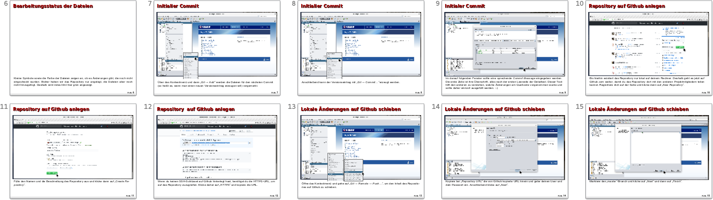
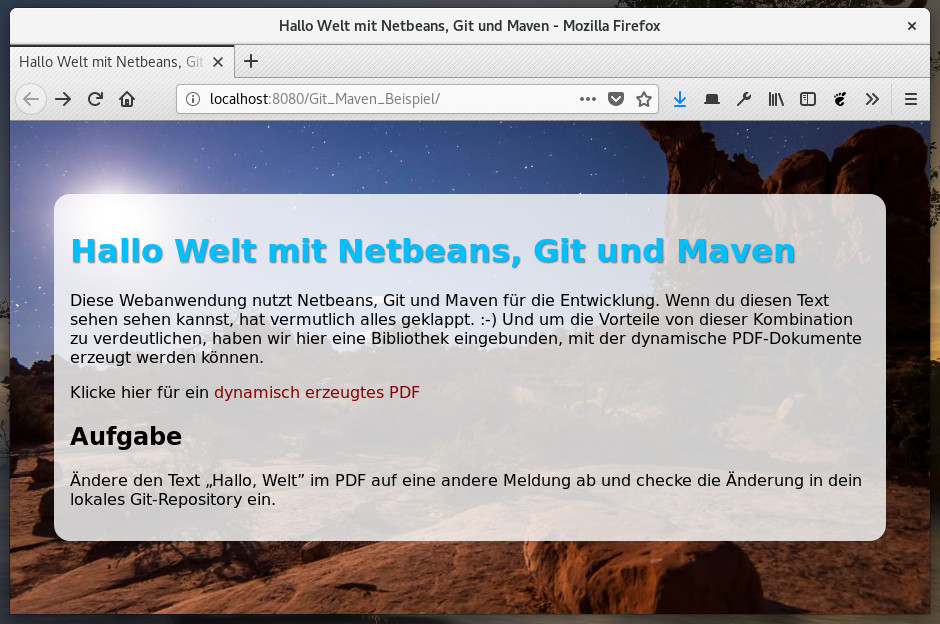
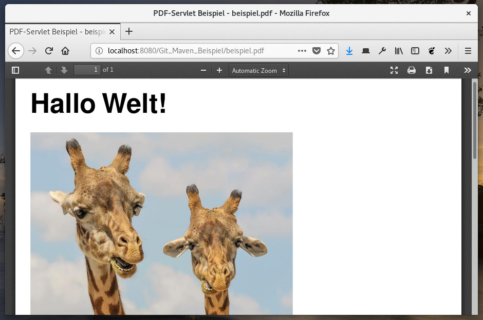

Auf Moodle findest du unter „Allgemeine Hinweise” eine bebilderte Anleitung zur Nutzung von Git in NetBeans. Diese soll dir helfen, im Team gemeinsam am Quellcode der Portfolioaufgabe zu arbeiten.
Lese dir die Anleitung durch und spreche dich mit deinen Teammitgliedern ab, wer das Repository anlegen wird.
Klone das Repository dhbwka-wwwi-vertsys-git-maven-beispiel und versuche es zum Laufen zu bringen. Das Beispiel zeigt, wie mit Maven weitere Klassenbibliotheken (hier zum Erzeugen eines PDF) in ein Projekt eingebunden werden können. Du musst dich in der Vorlesung damit zwar nicht selbst herumschlagen, für andere Vorlesungen ist es jedoch ganz gut zu wissen, dass es das gibt. 😎
|  |  |
Nimm eine kleine Änderung am Quellcode vor, um den Text "Hallo Welt!" 🦒 zu ändern und bestätige die Änderung in einem lokalen Commit.
Als nächstes lege ein neues NetBeans-Projekt mit einem kleinen Hallo-Welt-Programm an. Gehe gemäß der Anleitung vor, um das Projekt mit Git zu überwachen und auf GitHub zu veröffentlichen. Anschließend teile das Projekt mit deinem Sitznachbarn bzw. deiner Sitznachbarin. Nehmt gemeinsam ein paar Änderungen vor, die ihr euch gegenseitig über GitHub zur Verfügung stellt.